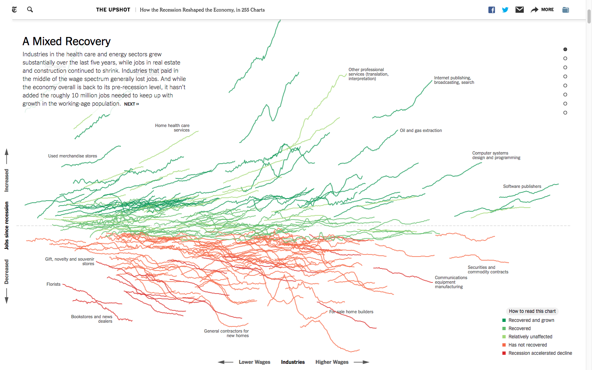
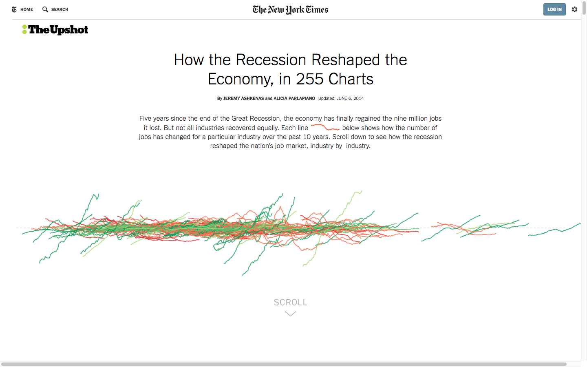
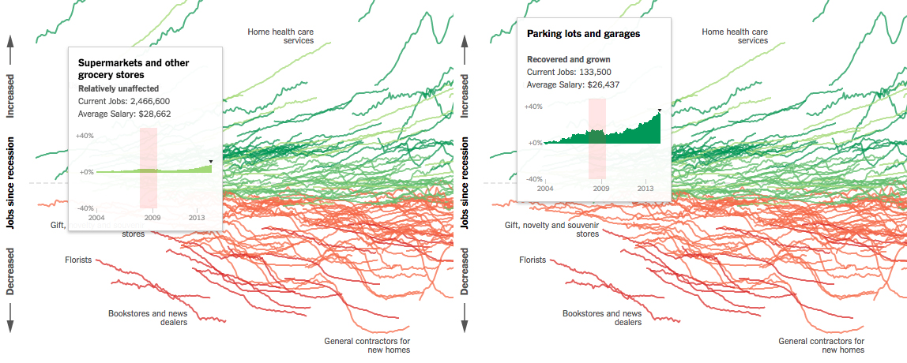

ASSIGNMENT 8 - NYT, our guide to understanding the 2008 recession?
The visualization in its entirety.
The following presents a critique of How the Recession Reshaped the Economy, in 255 Charts, a data visualization piece made by Jeremy Ashkenas and Alicia Parlapiano for the New York Times (2014, June 6th) that dissects the 2008 financial crisis in the United States and its effects on job growth. It does so by isolated each industry and plotting its performance, in terms of number of jobs, from 2004 to the time the visualization was created in April 2014.
The primary aim of this piece is to illustrate the complexity of post recession economic recovery, the resulted of which have been “mixed” and vary significantly by industry. The way in which the data is unpacked throughout the piece makes use of job growth figures to highlight certain national and global economic trends as well as points of contention relevant to the political economy of that time.
Graphically, the piece utilized three visual characteristics, as well as interactivity, in order to convey information. Each of these characteristics functions as follows. Color indicates one of five industry performance classifications. Position indicates both an industry’s average wage as well as the net change in job growth since the recession (as a percentage. Shape (line graph) indicates job growth from 2004 to 2014. Interactivity is used to filter the data.
The data that was required to construct this visualization includes industry classifications, job growth figures per industry, and average wages per industry. All three of the data features used in the piece was sourced from the Bureau of Labor Statistic’s Current Employment Statistics Program. All job growth figures were converted into percent growth in order to normalize values by the size of the industries.
The visualization's home page.
Strengths
The first thing that the viewer encounters in this visualization—a (seemingly) intentionally haphazard jumble of line graphs—is both visually striking and helps compel the viewer to continuing probing the piece. Coupled with the introduction text, which is brief, but arguably enough information to explain the visualization’s premise and prepare the viewer for what is to follow, the landing page functions to lure the already interested down the page.
The way in which the visualization is constructed around the narrative of uneven economic recovery facilitates comprehension of the piece as well as assures that the viewer will not overlook the specific aspects of the data deemed important to this narrative by the authors. The interactivity of the piece allows for the text to exist solely with the data that it describes (“grooming” industries, for example. To this end, in discussing “data/text integration,” Tufte challenges the separation between word and data representation that dominated conventional informational reports. “Words, graphics, and tables are different mechanisms with but a single purpose—the presentation of information. Why should the flow of information be broken up into different places on the page?” (Tufte 2001).
The layering of graphic characteristics that can be manipulation—position, color, shape, and size—allows for the representation of many different features of the data to be displayed simultaneously. For every data point (industry), its trajectory of job growth, net job growth, average wage, and economic performance can be ascertained.
The visualization's home page.
Weaknesses
At its core, this visualization is a combination of a relatively traditional scatter plot with two axis, as well as, a series of line graphs, each of which has two axis respectively. This hybridity initially makes it easy for the viewer to become confused because it is not immediately apparent that all of the line graphs are not to be read on the same x-y axes (ie. one large common line graph), but are indeed multiple discreet graphs. Given the unconventional nature of this visualization it does take a while to acclimate to the representation style and the viewer must take some time training himself as to how to read the piece. The confusion brought about by this begs the questions, what is effectively gained by representing each data point as a line graph and would this visualization be easier to digest if the line graphs were replaced by a series of points?
The second shortcoming of the piece stems from the restrictiveness of the interactivity. As it is designed, the lion’s share of the visualization’s interactivity occurs only to serve the delivery of the author’s narrative. While effective in this regard, this leaves little room for exploration on the part of the viewer. “Any Information Visualization project should not only facilitate understanding but also the analysis of the data, according to specific use cases and defined goals. By employing interactive techniques, users are able to properly investigate and reshape the layout in order to find appropriate answers to their questions” (Lima 2009). Being able to control how the data representation was manipulated through filtering etc., would allow the viewer to gain a more robust understanding of the data and potentially reach new conclusions.
Given that each industry is presented in essentially isolation (alone on its own line graph), it is hard to make comparisons and qualify the meaning of the job growth data outside of simple positive or negative growth. It would be potentially nice to see some kind of base line, perhaps a line representing the overall performance of the economy, in order to understand the performance of each industry relative to the whole within each line graph.
Lastely this visualization leaves no way for the viewer to get a sense of magnitude of these industries relative to one another due to normalization (percent growth). For example, the “supermarkets” industry employs over 2 million people, but is lower on the y axis than the “parking lots and garages” industry with employs approx. 100,000 people. Although, it is important to normalize the data for the sake of readability, it could be nice to have a button option to convert the data from percentages to counts in order to get a sense of the relative size of each industry.
Sources
Tufte, E. R. (2001). Aesthetics and Technique. The Visual Display of Quantitative Information. Cheshire, CT: Graphics, 177-90.
Lima, M (2009, August 30). Information Visual Manifesto. Visual Complexity Blog. Retrieved from http://www.visualcomplexity.com/vc/blog/?p=644.